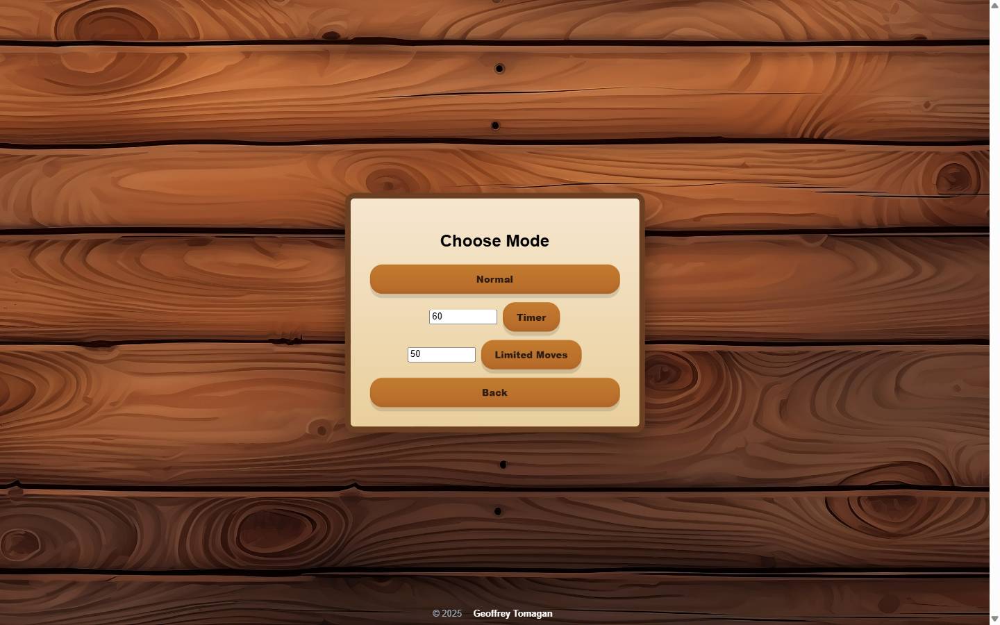

Geoffrey Adam Tomagan
Computer science student at UP Tacloban. On show: four pieces of software, each a different kind of build.
Contact-

SkolarTrack, 2026React, Node with Express, PostgreSQLA scholarship aggregator and application tracker for Filipino students.Visit the live site
-

Pathfinder-8, 2025JavaScript, A* searchAn 8-puzzle for the browser with an auto-solver that finds the shortest solution.Play it
-
Screenshot to come
AntiDoomScroll, 2026Chrome extension, JavaScriptA timer for the social sites you choose, with a full-page break prompt when time is up.Read the source
-
Screenshot to come
DormHub, 2026Java 21, Swing, MySQLDormitory records in one place: residents, rooms, payments and passes. Built with a team.Read the source